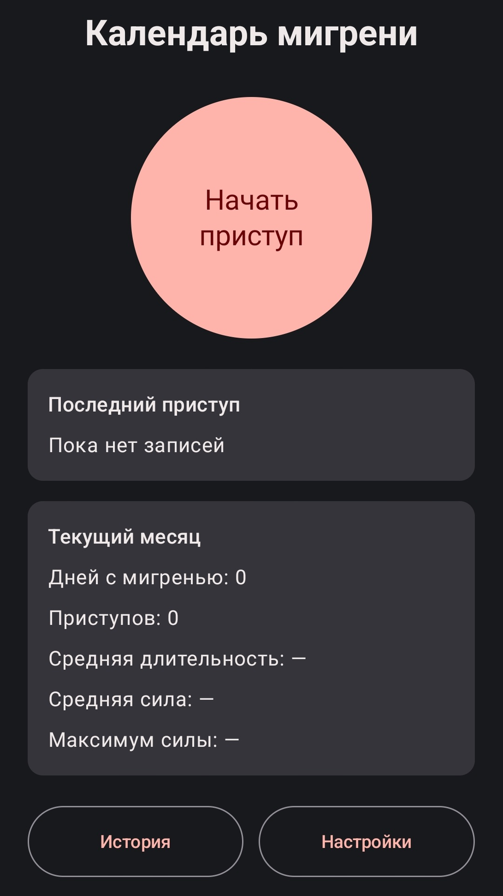
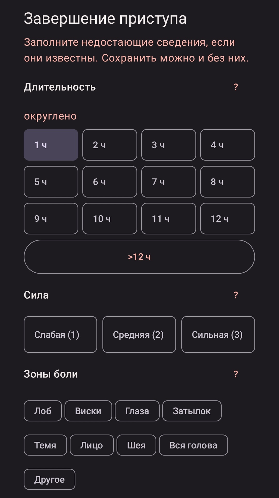
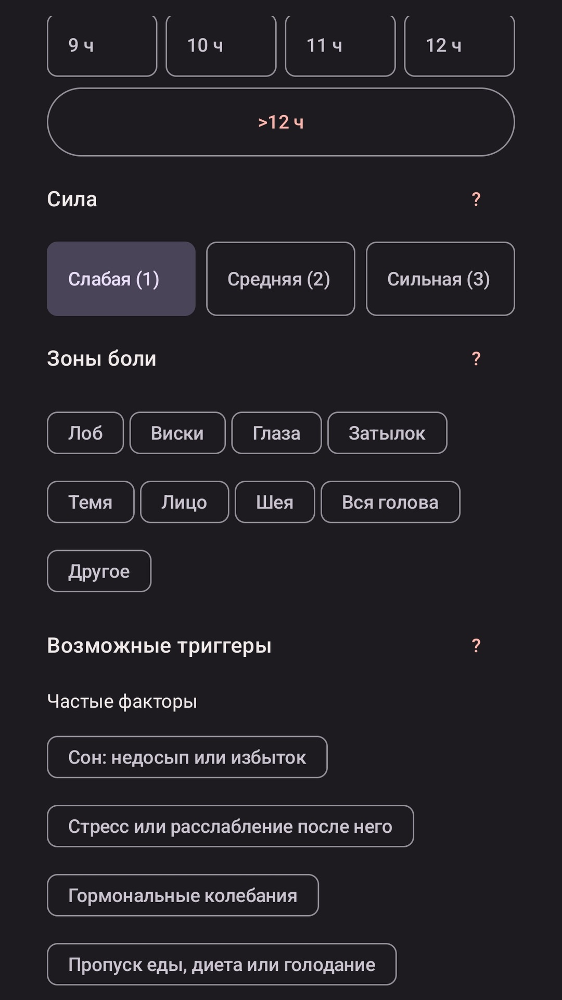

Как это выглядит



Возможности
- Запуск таймера приступа и ручное добавление записей
- Длительность от 1 до 72 часов и сила по шкале 1–3
- Множественный выбор зон боли: лоб, виски, глаза, затылок, темя, лицо, шея и другие
- Возможные триггеры: сон, стресс, гормональные колебания, питание, кофеин, погода, свет, запахи и другие
- Название лекарства и дозировка; ранее введённые варианты доступны для быстрого выбора
- Свободный комментарий к каждому приступу
- История по месяцам, редактирование и удаление записей с возможностью отмены
- Помесячная статистика: приступы, дни с мигренью, средняя длительность и сила
- Экспорт записей за выбранный месяц в CSV для таблицы или передачи врачу
- Три темы оформления и интерфейс на русском, английском, немецком, французском, испанском и китайском
Как работает дневник
1. От начала приступа до понятной истории
Начало приступа можно отметить одной кнопкой, а характеристики добавить при завершении или позже. Если какие-то сведения неизвестны, запись всё равно сохранится.
- Быстрый старт. Таймер фиксирует начало, а пропущенный приступ можно добавить вручную.
- Наблюдения без обязательных полей. Силу, зоны боли, триггеры, лекарство и комментарий заполняете только вы и только когда это удобно.
- История под контролем. Записи можно редактировать и удалять; после удаления доступна отмена действия.
2. Данные остаются у вас
Приложение работает без интернета, аккаунта, рекламы и аналитики. Разработчик не получает копии ваших записей.
- Локальное хранение. Дневник и список ранее введённых лекарств сохраняются только на устройстве.
- CSV по вашему действию. Файл создаётся через системный диалог Android в выбранном вами месте. Вы сами решаете, кому его отправить.
- Удаление без остатка в приложении. Отдельные записи или все данные можно удалить в любой момент.
Для чего это нужно
Дневник помогает не полагаться только на память: перед визитом к врачу у вас будут даты, длительность, сила приступов и ваши наблюдения о возможных факторах. Это не автоматическая диагностика, а аккуратная история для разговора со специалистом.
Важно: приложение не ставит диагнозы, не назначает лечение и не оценивает эффективность препаратов. Перечень триггеров помогает фиксировать наблюдения и не означает доказанную причину приступа. Не изменяйте назначенное лечение на основании записей.